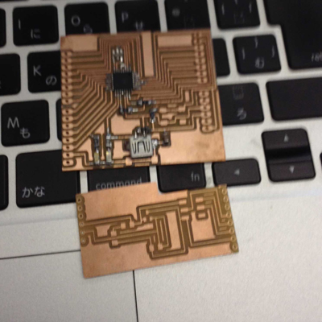
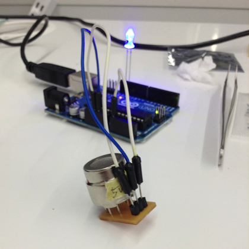
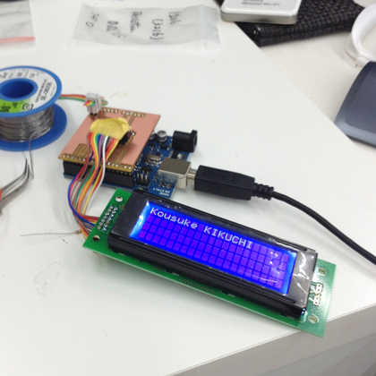

Kousuke Kikuchi
Fab Academy Participant and PhD Candidate
Week 18: Project Development
Work Progress:
1. Self-Design Arduino
I designed my self-design arduino which pin configurations are completely same as Original Arduino. The Problem of this is AVRISP MKII was not able to burn the bootloader to ATMega328 even though the all ISP pins were connected to the corresponding pins of ATMega328. Of course I checked that SCK, MISO, MOSI, RST were connected properly. Also, although I made a FabKit for the verification of ATMega328, it was not able to be burnt.
To make a self-design Arduino, electronics design can be done in Arduino.

2. Checking all the sensors.
MG811, CO2 Sensor:
DHT22, Temperature and Humidity Sensor
Grove, Moisture Sensor:
MPL115A2, Air Pressure Sensor:
Piezo Sensor (to detect wind speed)
TEMT8000, Photosensor:
NXFT15XH103FA2B, Thermistor:
I checked the all the sensors used in final project.
CO2 sensor requires 6V DC, also change boundry was quite narrow, from 200mV to 350mV. Also, CO2 ppm might be good indicator for plant and humans, but it is not practical. So, I determined I did not use CO2 sensor this time.

3. Checking the LCD
LMB0820, LCD Unit:
I have designed a LCD Shield because I was completely disgusted with a number of pins of LCD. So, I designed a LCD and I2C Unit for convinience.
